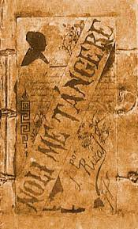

BOOK 19

"Noli Me Tangere" by Jose Rizal
Rizal, one of the national heroes of the Philippines, wrote this book in 1887 while the nation was under
Spanish control in order to draw attention to the social ills which beset the country at the time. It’s
now required reading in every secondary school in the Philippines and is considered the country’s
national epic.